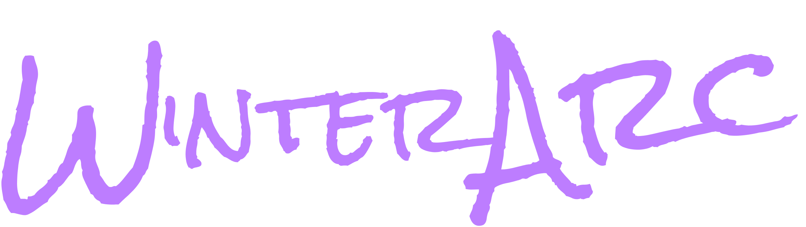

Welcome to the Frozen Terminal, wanderer.
From this moment on, every focused minute, every tab you resist, and every clean workspace you maintain strengthens your Monk’s skills in Stillness, Precision, and Order. As you work, the system watches your patterns and feeds them into your AI-generated Future Twin — a projected echo of who you could become if discipline becomes your code. Step in, clear the noise, and begin your ascent through the neon silence.